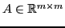
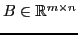
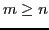
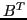
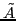
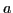
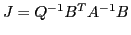
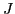
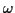

Next: Bibliography
Nikolaos, N M Missirlis
Preconditioning augmented linear systems
Department of Informatics and Telecommunications
University of Athens
Panepistimiopolis
15784
Ilisia
Athens
Greece
nmis@di.uoa.gr
Maria Louka
Let

be a symmetric positive definite
matrix and

be a matrix of full column rank,
where 
. Then, the augmented linear system is of the form
where
with 
be the transpose of the matrix B.
When A and B are large and sparse, iterative methods for solving
(![[*]](file:/usr/share/latex2html/icons/crossref.png) ) are effective and more attractive than direct methods,
because of storage requirements and preservation of sparsity.
) are effective and more attractive than direct methods,
because of storage requirements and preservation of sparsity.
The difficulty in applying iterative methods such as the
successive overrelaxation (SOR) method [10] to system
() is the singularity of the block diagonal part of the
coefficient matrix. Some methods have been developed to overcome this
difficulty such as the Uzawa and the Preconditioned Uzawa method
[1]. In 2001, Golub et al. [4] generalized
the Uzawa and the Preconditioned Uzawa method for the augmented system
() by introducing an additional acceleration parameter and
produced the SOR-like method. Other known methods, competitive and
specially attractive for solving () are the preconditioned
MINRES and GMRES methods [3]. In case where the matrix A is
symmetric and positive definite, the Preconditioned Conjugate Gradient
(PCG) method [5] is the most suitable. In 2003, Li, Evans and
Zhang [6] proved that the PCG method is at least as
accurate as the SOR-like method. In 2005, Bai et al.
[2] proposed the Generalized SOR (GSOR) method and
proved that it has the same rate of convergence but less complexity than
the PCG method. Furthermore, the Generalized Modified Extrapolated SOR
(GMESOR) method, a generalization of the GSOR method, was also proposed
for further study.
The latter is a generalization of the GSOR method as it uses one additional parameter.
In this paper, we study the Generalized Modified Extrapolated
SOR (GMESOR) method and the Generalized Modified Preconditioned
Simultaneous Displacement (GMPSD) method. The latter is derived by using
as preconditioning matrix the product of a lower and upper triangular
part of 
[7], [8].
In an attempt to generalize our theory, we introduce an additional
parameter 
in the structure of the matrix
, with the hope of
increasing the rate of convergence for the aforementioned methods. Our
starting point, for studying these methods, is the derivation of
functional relations which relate the eigenvalues of their iteration
matrices with those of the key matrix

. Assuming that
the matrix Q is symmetric positive or negative definite matrix, the
eigenvalues of the matrix 
are real and either positive if the matrix
Q is positive definite or negative if the matrix Q is negative definite.
Under these assumptions we find sufficient conditions for the convergence
of the aforementioned methods and determine the optimum values of their
parameters. For the determination of the optimum values of the parameters
in GMESOR and GMPSD methods we followed a similar approach to Varga
[9] p. 110, for the optimum 
of SOR.
Next: Bibliography
root
2012-02-20